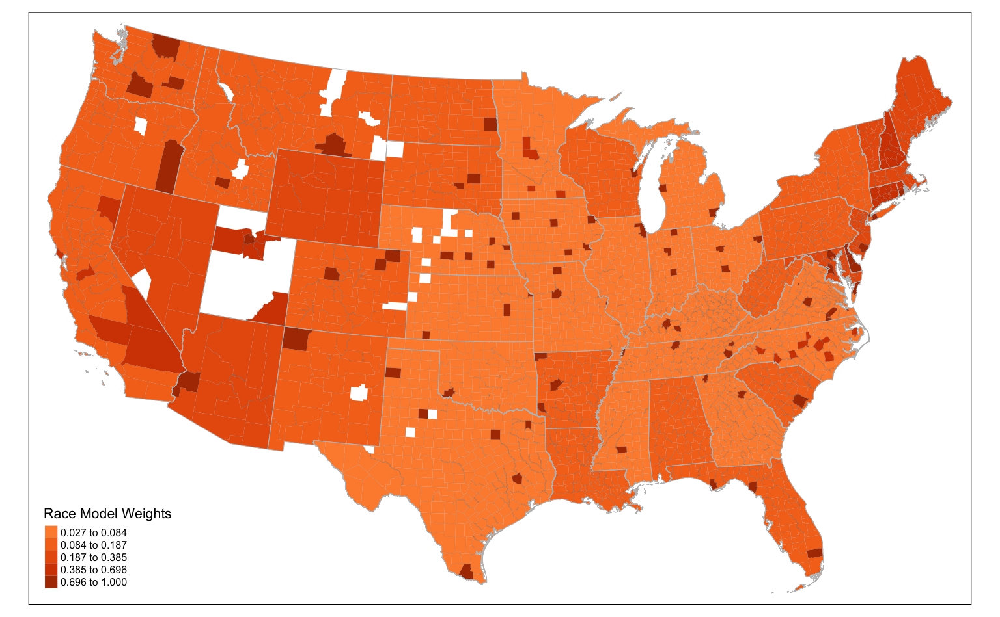
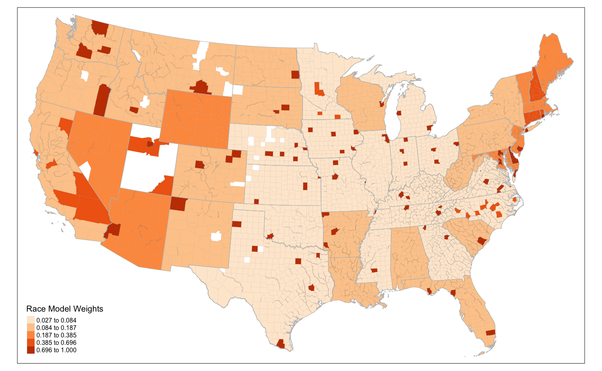
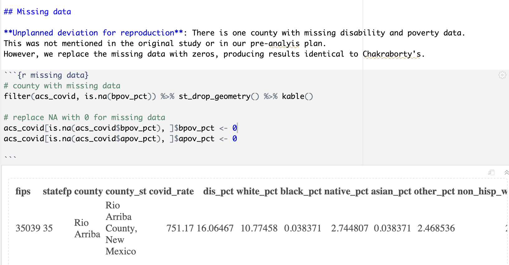
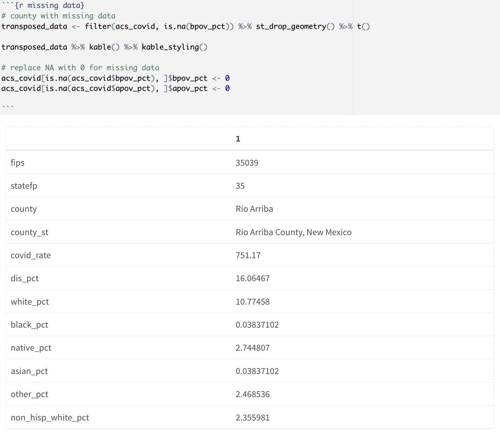
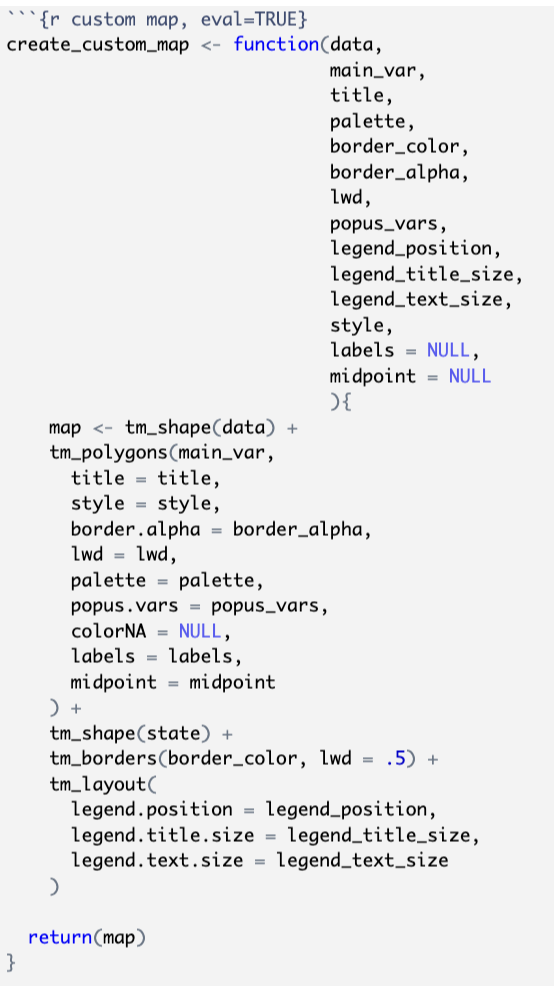

Disability and COVID-19 Reproduction Blog
Please see the most up-to-date and revised verion of Chakraborty’s study here (R markdown file): https://madgallop.github.io/RPr-Chakraborty-2021/
Identification of errors and plan for modification
The following report will plan and implement revisions to the reproduction of Chakraborty’s 2021 study, Social Inequities in the distribution of COVID-19: An Intra-Catagorial Analysis of People with Disabilities in the U.S. This study was reproduced by Joseph Holler, Junyi Zhou, Peter Kedron, Drew An-Pham, Derrick Burt, and Madeleine Gallop will be implementing revisions to their work.
In this report, I will be making six primary revisions:
MAP The final choropleth map, depicting each county’s weight in the GEE model has a mistaken parameter causing it to only use half of the available orange color ramp. I plan to modfiy the code for this map to fix the color ramp.
RATIONAL The “rational for the updated report” section should, and currently does not, occur at the end of the reproduction study. I will move this section to the proper area.
DISCUSSION Any new results will be integrated with Emily’s discussion.
CONCLUSION There is not a seperate conclusions section that concludes whether the reproduction attempt was successful, and what the implications are for how the original study contributes to scientific knowledge. I will add this section, taking from the Discussion section as needed, to help the audience understand the contributions of the original study to scientific knowledge.
MISSING DATA The horizontal orientation of the missing data table with Kable and/or KableExtra functions should be improved. I will fix the orientation of this table.
CREATEMAP There are certain ways the efficiency of the study could be improved, such as writing a general purpose function ‘create_custom_map’ that can be reused throughout the study. Hopefully encapsulating certain code blocks in a function will improve the efficiency or elegancy of the code.
In order to visualize and compare results, I plan to include before and after pictures of any visual changes, or orally describe the difference brought about by my revisions. I will include before and after screenshots of code blocks I modify, and/or write about any changes I make.
Implement and assess changes to the Chakraborty study
- MAP I made a slight adjustment to the code for the final choropleth map, depicting each county’s weight in the GEE model. I commented out the parameter “midpoint=0,” which ultimetly rendered a map that spanned the entire orange color ramp.
before: 
after: 
RATIONAL Originally, the section titled “Rational for the updated report” came before the section called “Emily’s Discussion.” I moved it to the very end of the study.
DISCUSSION I changed the name of “Emily’s Discussion” to “Madeleine and Emily’s Integrated Discussion” and added a quick blurb about my contributions to the study, such as improving efficiency in the mapping code blocks and adding a seperate concluding section. I also added an introductory sentence to this section.
CONCLUSION There was not a seperate conclusions section that concludes whether the reproduction attempt was successful, and what the implications are for how the original study contributes to scientific knowledge. I added this section by drawing from Emily’s and expanding on certain sections of Emily’s concluson, making significant efforts to increase its clarity and readability. Hopefully, this section will help the audience quickly understand the contributions of the original study to scientific knowledge.
MISSING DATA I transposed the missing data table with Kable and/or KableExtra functions to be vertically oriented instead of horizontally oriented. I did this by piping t() after st_drop_geometry(). I also added a newline to create the table itself after modifying the data in it. Finally, I piped kable_styling() to add some lines and make the table more visually appealing.
before: 
after: 
- CREATEMAP In order to increase the modularity, readability, consistency, and reuseability of the code, I defined a new function called ‘create_custom_map’ that takes various parameters as arguments and allows us to customize each map’s appearance and content. I turned the various variables that are special to different map vizualizations into function parameters. The function then uses these parameters to create a thematic map layer using the ‘tmap’ package. Thus, we are able to reuse the function to create different maps by specifying different values for these parameters. Now, when the code calls ‘create_custom_map’, each map will be customized. I applied changed the code for most of the maps in the reproduction study to use this function. I did not use the ‘create_custom_map’ function for a couple of the more complex maps in the reproduction study, including the Race Model Residual map (because the n=7 variable was difficult to generalize), and the SaTScan maps (due to their complexity). Creating a special function for map creation makes the overall code more modular and easy to read. It allows us to abstract away the details of map creation and focus on the uniqueness of each map. It also reduces inconsistencies between maps, and reduces the risk of errors.
code for reuseable mapping

What have I learned?
This reproduction and reanalysis study of Chakraborty’s (2021) research on the relationship between COVID-19 rates and demographic characteristics of people with disabilities in the continental United States has provided valuable insights into the challenges and opportunities of replicating scientific research.
Importance of Reproducibility:
One of the primary lessons from this study is the critical importance of reproducibility in scientific research. Reproducing a study allows us to validate its findings and assess the robustness of its conclusions.
Sensitivity to Methodological Choices:
I’ve learned that small changes in methodology and computational environment can lead to variations in results. In this case, differences in the way spatial clusters were defined and COVID-19 risk was classified had notable effects on the outcomes. Researchers should be aware of the sensitivity of their analyses to such choices.
Complexity of Spatial Epidemiology:
Spatial analysis is a complex field, and the choice of statistical methods and software tools can impact the results. Researchers need to carefully consider the appropriateness of their analytical techniques for the specific research question and data at hand.
Ecological Fallacy and MAUP
The reproduction study and subsequent analysis highlighted the challenges posed by ecological fallacy and the modifiable areal unit problem (MAUP) in analyzing county-level data. These issues emphasize the importance of interpreting results cautiously and considering the spatial scale of analysis.
Methodological Changes:
The reproduction study deviated from the original study in several ways. 1. The reproduction study used the nonparametric Spearman’s correlation coefficient instead of Pearson’s correlation due to non-normal data, and redefining how COVID-19 risk clusters were classified. These changes were made to address limitations and improve the study’s rigor. 2. The reproduction study compared results between different software tools (SaTScan and SpatialEpi) for spatial cluster analysis, which revealed differences in cluster identification and relative risk calculations. 3. It also reconsidered how COVID-19 risk clusters were defined, opting for a cluster-based relative risk classification rather than a county-based one. This choice significantly impacted the results and the interpretation of clusters.
Clearly, the reproduction study varied from the initial study in a number of ways. These deviations can be viewed as improvements and errors, depending on the specific aspect:
Improvements: Some deviations, such as the use of Spearman’s correlation for non-normal data and the redefinition of cluster-based relative risk, were made to address methodological issues and improve the study’s validity.
Errors: Deviations that led to differences in results, especially those that were not thoroughly justified or that introduced additional complexity without clear benefits, could be considered errors. For example, changes that created a larger number of GEE clusters added complexity to the analysis. But ultimetly, I think these differences ultimetly improved the study and contributed to a more accurate understanding of the results.
Opportunities for Improvement and Further Research
Clarity in Methodology: Ensuring clarity in the documentation of methodology, including detailed descriptions of how key parameters are determined, can improve the reproducibility of future studies.
Alternative Statistical Approaches: Considering alternative statistical approaches for spatial epidemiology, particularly ones that account for spatial dependence without introducing unnecessary complexity, can lead to more robust findings.
Individual-Level Analysis: Conducting individual-level analysis, where possible, can provide insights that go beyond ecological relationships and help mitigate issues related to ecological fallacy.
Data Quality and Temporal Effects: Future studies should focus on collecting high-quality, up-to-date data to assess temporal effects more accurately, especially in rapidly changing situations like a pandemic.
Replication Studies: To further test the theories established by this study, meaningful replication studies with larger sample sizes and diverse geographic regions should be conducted. These studies can help validate the findings and identify any regional variations.
In conclusion, reproduction studies are essential for ensuring the validity and reliability of scientific research. They offer opportunities to improve research design, address methodological challenges, and contribute to the cumulative knowledge of a field. While deviations may occur, they should be justified, and their implications carefully considered. This study underscores the need for transparent reporting, robust methodology, and the ongoing pursuit of scientific rigor in spatial analysis of recent social trends and public health research.